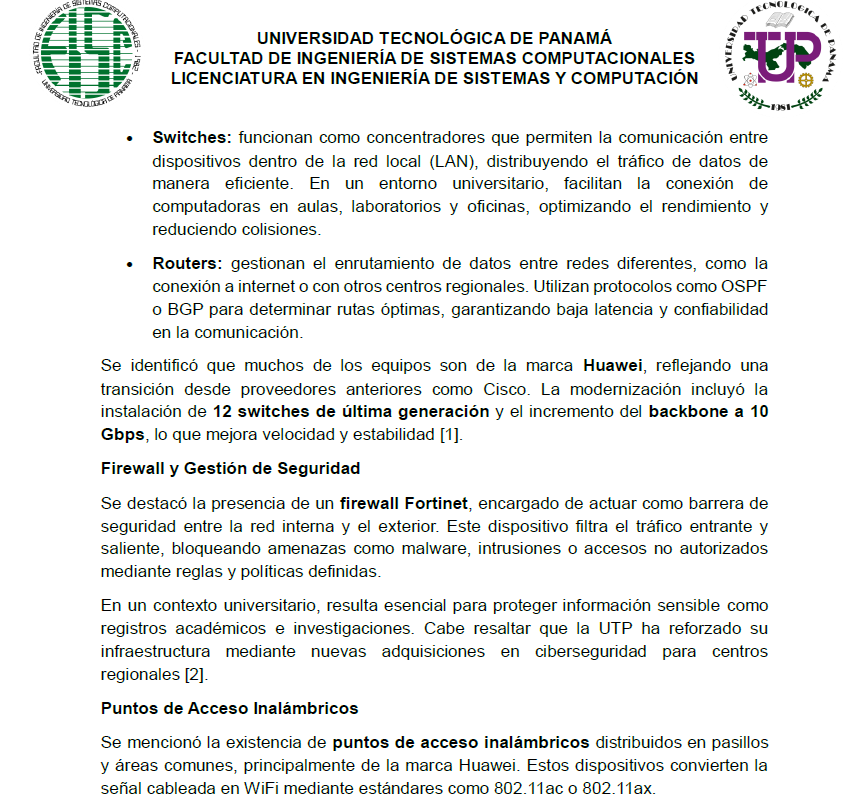
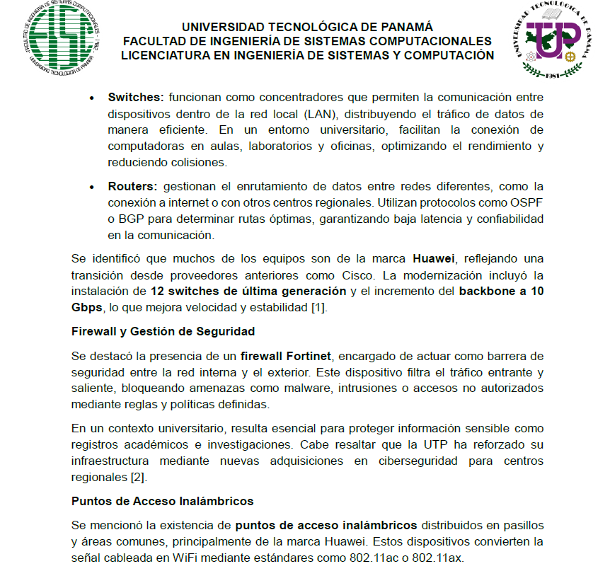
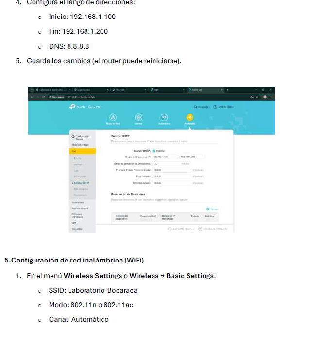
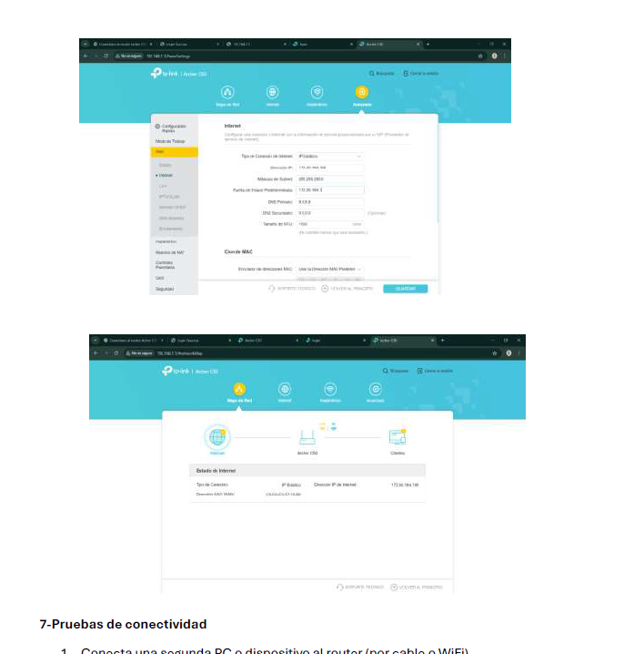
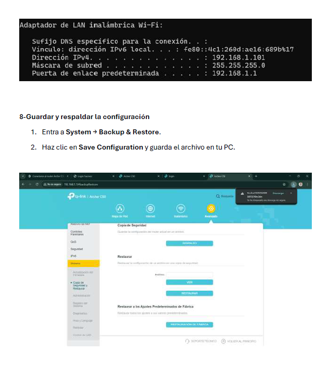
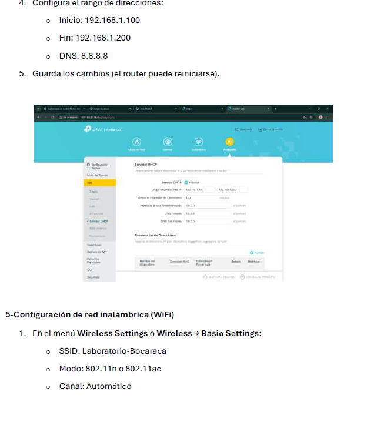
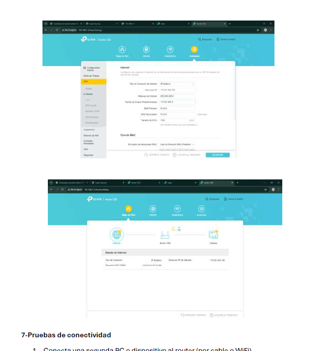
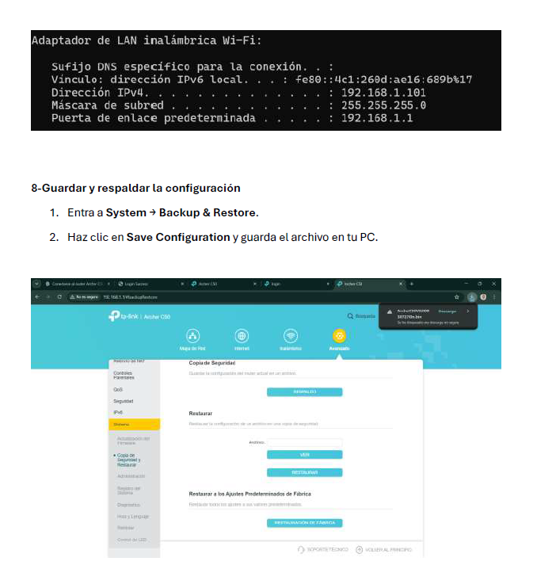

Inicio
Breve introducción del curso y propósito del compendio.
Este portafolio reúne todo lo que realizamos durante el semestre en el curso de Redes Informáticas.
Aquí mostramos las actividades, prácticas, materiales y proyectos que trabajamos como parte del laboratorio.
El propósito de este compendio es dejar una evidencia clara y organizada de nuestro aprendizaje: desde las primeras
prácticas hasta los proyectos finales. También sirve como una forma de ver nuestro avance en los temas de redes y cómo
aplicamos lo aprendido en situaciones reales o simuladas.
Este trabajo fue elaborado por el grupo de laboratorio conformado por:
Jason Arenales, Ian Thompson, Julio Fuentes y Ricardo Sanjur, bajo la guía de la
Dra. Y. Castillo, en la carrera de Ingeniería en Sistemas y Computación de la
Universidad Tecnológica de Panamá.
Actividades del semestre
Actividades organizadas por tipo de trabajo desarrollado durante el semestre.
LABORATORIOS (20%)
Laboratorio 1 – Investigación sobre problemas de comunicación en redes
Fecha de entrega: 28/08/2025
Investigación grupal sobre problemas de red como interferencia, latencia, atenuación, ruido, jitter, pérdida de paquetes, throughput y errores de enlace. Incluyó definición, causas, soluciones, ejemplos y referencias.
Enlace al trabajo: Agregar enlace de OneDrive aquí
Laboratorio 2 – Armado de cables de red
Fecha de entrega: 05/09/2025
Informe sobre el proceso de armado de cables de red, herramientas y tipos de cableado.
Enlace al trabajo: Agregar enlace de OneDrive aquí
Laboratorio 3 – Equipos de interconexión
Fecha de entrega: 08/09/2025
Selección y análisis de un equipo de interconexión. Incluyó definición, uso, características, imágenes y conectividad.
Enlace al trabajo: Agregar enlace de OneDrive aquí
Laboratorio 4 – Visita al cuarto de comunicaciones
Fecha de entrega: 16/09/2025
Informe sintetizado sobre la visita al cuarto de comunicaciones del CR Chiriquí.
Enlace al trabajo: Agregar enlace de OneDrive aquí
Laboratorio 5 – ISP y analizador Wireshark
Fecha de entrega: 25/09/2025
Análisis de tráfico de red con Wireshark y estudio del funcionamiento de los ISP.
Enlace al trabajo: Agregar enlace de OneDrive aquí
LAB 6 – Software de monitoreo de red
Fecha de entrega: 28/10/2025
Selección de un software de monitoreo de red, con análisis de funciones, ventajas, limitaciones y esquema de trabajo.
Enlace al trabajo: Agregar enlace de OneDrive aquí
Lab 6 – Red simple
Fecha de entrega: 08/10/2025
Construcción y simulación de una red simple en Packet Tracer.
Enlace al trabajo: Agregar enlace de OneDrive aquí
Laboratorio 5 – Creación de VPN
Fecha de entrega: 28/10/2025
Creación de una red doméstica con tres redes virtuales: Invitado, Virtual1 y Virtual2 (IoT). Se entregó diagrama y documentación.
Enlace al trabajo: Agregar enlace de OneDrive aquí
LAB 6 – Creación de una red simple (final)
Fecha de entrega: 13/11/2025
Diseño final de una red simple con dispositivos seleccionados por el grupo.
Enlace al trabajo: Agregar enlace de OneDrive aquí
PARCIALES (30%)
Parcial 1 – Evaluación teórica
Fecha: 25/09/2025
Evaluación teórica realizada mediante formulario en línea sobre los contenidos trabajados
en clase.
Evidencia del parcial:
Ver evidencia (captura)
Parcial 2 – Curso Packet Tracer (NetAcad)
Fecha: 16/10/2025
Curso individual del Cisco NetAcad con examen final y evidencia de nota.
Enlace al trabajo: Agregar enlace de OneDrive aquí
PROYECTOS (15%)
Proyecto Nº1 – Documento y presentación
Fecha: 14/10/2025
Entrega del documento y la presentación del proyecto designado al grupo.
Enlace al proyecto: Agregar enlace de OneDrive aquí
Acerca del sitio
Documentación general del Portafolio Estudiantil – Segundo Semestre 2025.
Este portafolio estudiantil fue creado para recopilar, organizar y presentar todas las
actividades desarrolladas durante el curso de Redes Informáticas, impartido por la
Dra. Yarisol Castillo, en el Segundo Semestre 2025.
El propósito principal del sitio es ofrecer un compendio claro y accesible que refleje nuestro
aprendizaje, las prácticas realizadas, los proyectos trabajados en grupo y el uso de herramientas
digitales. Buscamos que este portafolio sea una representación transparente del esfuerzo del
grupo Bocaracá y del progreso obtenido durante el semestre.
Además de su función evaluativa, este sitio también sirve como una muestra del trabajo colaborativo y
de cómo aplicamos los contenidos vistos en clase a situaciones prácticas, simulaciones
y ejercicios de laboratorio.
Créditos
- Elaboración del sitio web: Jason Arenales, Julio Fuentes, Ian Thompson, Ricardo Sanjur
- Docente responsable: Dra. Yarisol Castillo
- Curso: Redes Informáticas
- Grupo: 2IL144 – Laboratorio Bocaracá
- Institución: Universidad Tecnológica de Panamá, Centro Regional de Chiriquí
Tecnologías utilizadas
- HTML5: estructura y contenido del sitio.
- CSS3: diseño visual, estilos y maquetación.
- JavaScript: interactividad (como los sliders de imágenes).
- OneDrive: almacenamiento de materiales y documentos utilizados en el curso.
- VS Code: entorno de edición del proyecto.
- Navegador web: visualización y pruebas del portafolio.
- (Opcional) GitHub Pages: posible hosting para compartir el sitio.
 


 




